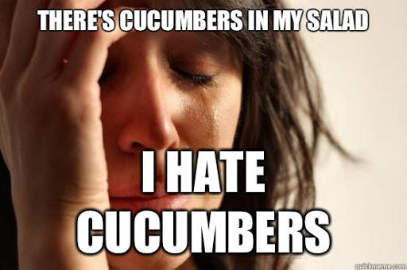
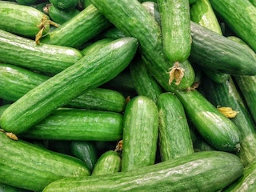

Cucumbers are gross! Do you hate cucumber too? Have you ever wondered why you or someone you know hates cucumbers? The answer might be in your genes. I've had a strong aversion to cucumbers my whole life. That also extends to watermelons, which in my opinion taste similar. However, I like pickles just fine. My dad also shares the same cucumber hate with me, so that was my first clue that there might be more to it than weird personal quirk. Like most vegetables (cucumbers are actually scientifically classified as fruit, but most people treat them as vegetables) cucumbers contain various phytochemicals. A lot of these bioactive compounds may have a positive effect on human health. Many of them are also known for their bitter and pungent taste.

Cucumbers contain related organic compounds that are thought to cause the taste some people find repugnant.
A gene called TAS2R38t is responsible for the ability to taste the earlier mentioned PTC, and another bitter compound called PROP.
It's not too much of a stretch to say that there could be some more unpleasant chemicals that only certain people can taste
" Declaration of those who do not like cucumbers. We want the following world.

1. A world where you don't have to say 'extract cucumbers' when ordering cold noodles
2. A world where you can buy a convenience store sandwich without worrying about cucumbers
3. A world where you don't have to take out cucumber with chopstick
4. A world where there are no more young children suffering from cucumbers in school lunches
5. A world where people who don't like cucumbers live together
We will fight together to unite and join forces to live a world like this.